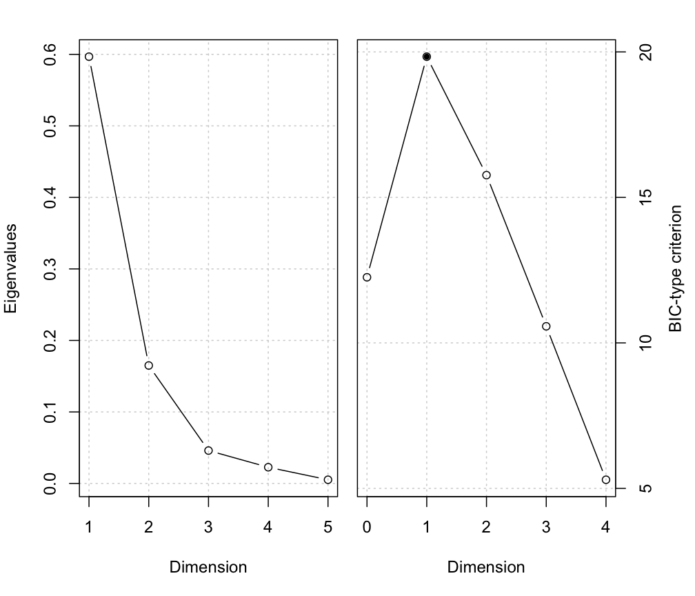
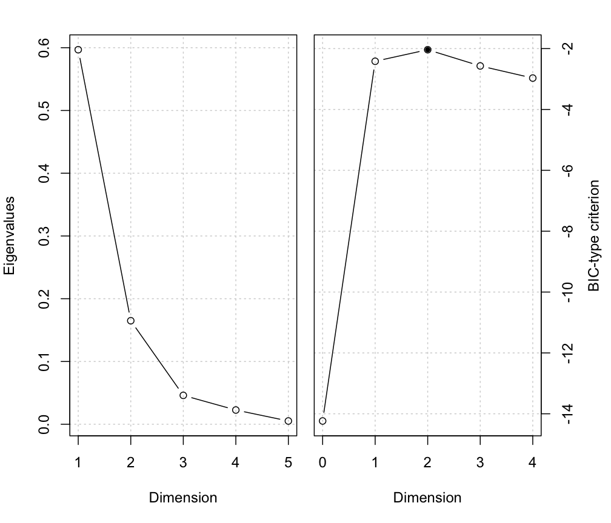

BIC-type criterion for dimensionality
msir.bic.RdBIC-type criterion for selecting the dimensionality of a dimension reduction subspace.
Usage
msir.bic(object, type = 1, plot = FALSE)
bicDimRed(M, x, nslices, type = 1, tol = sqrt(.Machine$double.eps))Arguments
- object
a
'msir'object- plot
if
TRUEa plot of the criterion is shown.- M
the kernel matrix. See details below.
- x
the predictors data matrix. See details below.
- type
See details below.
- nslices
the number of slices. See details below.
- tol
a tolerance value
Details
This BIC-type criterion for the determination of the structural dimension selects \(d\) as the maximizer of $$G(d) = l(d) - Penalty(p,d,n)$$ where \(l(d)\) is the log-likelihood for dimensions up to \(d\), \(p\) is the number of predictors, and \(n\) is the sample size. The term \(Penalty(p,d,n)\) is the type of penalty to be used:
type = 1: \(Penalty(p,d,n) = -(p-d) \log(n)\)type = 2: \(Penalty(p,d,n) = 0.5 C d (2p-d+1)\), where \(C = (0.5 \log(n) + 0.1 n^(1/3))/2 nslices/n\)type = 3: \(Penalty(p,d,n) = 0.5 C d (2p-d+1)\), where \(C = \log(n) nslices/n\)type = 4\(Penalty(p,d,n) = 1/2 d \log(n)\)
Value
Returns a list with components:
- evalues
eigenvalues
- l
log-likelihood
- crit
BIC-type criterion
- d
selected dimensionality
The msir.bic also assign the above information to the corresponding 'msir' object.
References
Zhu, Miao and Peng (2006) "Sliced Inverse Regression for CDR Space Estimation", JASA.
Zhu, Zhu (2007) "On kernel method for SAVE", Journal of Multivariate Analysis.
Author
Luca Scrucca luca.scrucca@unipg.it
Examples
# 1-dimensional symmetric response curve
n <- 200
p <- 5
b <- as.matrix(c(1,-1,rep(0,p-2)))
x <- matrix(rnorm(n*p), nrow = n, ncol = p)
y <- (0.5 * x%*%b)^2 + 0.1*rnorm(n)
MSIR <- msir(x, y)
msir.bic(MSIR, plot = TRUE)

#> $evalues
#> [1] 0.78156715 0.22947435 0.11603981 0.06234520 0.02539096
#>
#> $l
#> [1] -23.53979328 -3.13241816 -0.84365525 -0.21832783 -0.03169957
#>
#> $crit
#> d=0 d=1 d=2 d=3 d=4
#> 2.951794 18.060851 15.051297 10.378307 5.266618
#>
#> $d
#> [1] 1
#>
summary(MSIR)
#> --------------------------------------------------
#> Model-based SIR
#> --------------------------------------------------
#>
#> Slices:
#> 1 2 3 4 5 6
#> GMM XXX XXX EII XII EEE EII
#> Num.comp. 1 1 2 1 3 2
#> Num.obs. 33 33 11|22 33 14|8|11 25|10
#>
#> Estimated basis vectors:
#> Dir1 Dir2 Dir3 Dir4 Dir5
#> x1 -0.674107 0.25471 -0.226508 -0.21525 0.585965
#> x2 0.735787 0.35050 -0.059001 -0.20140 0.560962
#> x3 0.020264 -0.66562 0.481013 0.14466 0.567067
#> x4 0.046371 -0.32561 -0.099148 -0.92343 -0.113678
#> x5 -0.040453 0.51303 0.839052 -0.19861 -0.086482
#>
#> Dir1 Dir2 Dir3 Dir4 Dir5
#> Eigenvalues 0.78157 0.22947 0.11604 0.062345 0.025391
#> Cum. % 64.33618 83.22580 92.77783 97.909895 100.000000
#>
#> Structural dimension:
#> 0 1 2 3 4
#> BIC-type criterion 2.95179 18.0609* 15.0513 10.3783 5.26662
msir.bic(MSIR, type = 3, plot = TRUE)

#> $evalues
#> [1] 0.78156715 0.22947435 0.11603981 0.06234520 0.02539096
#>
#> $l
#> [1] -23.53979328 -3.13241816 -0.84365525 -0.21832783 -0.03169957
#>
#> $crit
#> d=0 d=1 d=2 d=3 d=4
#> -23.539793 -4.456998 -3.227898 -3.397318 -3.740522
#>
#> $d
#> [1] 2
#>
summary(MSIR)
#> --------------------------------------------------
#> Model-based SIR
#> --------------------------------------------------
#>
#> Slices:
#> 1 2 3 4 5 6
#> GMM XXX XXX EII XII EEE EII
#> Num.comp. 1 1 2 1 3 2
#> Num.obs. 33 33 11|22 33 14|8|11 25|10
#>
#> Estimated basis vectors:
#> Dir1 Dir2 Dir3 Dir4 Dir5
#> x1 -0.674107 0.25471 -0.226508 -0.21525 0.585965
#> x2 0.735787 0.35050 -0.059001 -0.20140 0.560962
#> x3 0.020264 -0.66562 0.481013 0.14466 0.567067
#> x4 0.046371 -0.32561 -0.099148 -0.92343 -0.113678
#> x5 -0.040453 0.51303 0.839052 -0.19861 -0.086482
#>
#> Dir1 Dir2 Dir3 Dir4 Dir5
#> Eigenvalues 0.78157 0.22947 0.11604 0.062345 0.025391
#> Cum. % 64.33618 83.22580 92.77783 97.909895 100.000000
#>
#> Structural dimension:
#> 0 1 2 3 4
#> BIC-type criterion -23.5398 -4.457 -3.2279* -3.39732 -3.74052